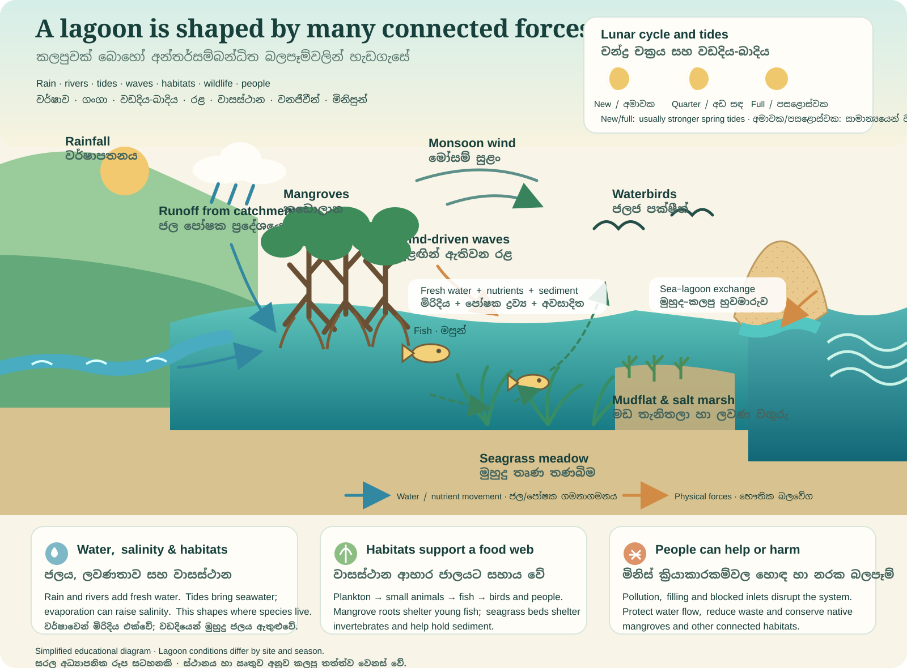

01
Open
A wide or frequently open inlet allows regular exchange with the sea. Tides and marine species can move in more easily.
More exchangeDiscover the lagoons that shelter wildlife, support livelihoods and connect rivers, mangroves, mudflats and the ocean.
Explore the lagoon ↓A coastal lagoon is a shallow water body partly separated from the sea by a sand or shingle barrier, but linked to it through one or more openings.
Lagoon water may be salty, brackish or seasonally fresh. Its character changes with rainfall, evaporation, river flow, tides, wind, waves and whether the sea inlet is open. Some Sri Lankan lagoons hold water year-round; others shrink or dry during the dry season.
Lagoons sit within coastal wetland types; their precise classification depends on how they connect to the sea and the surrounding habitats.
A useful way to describe lagoon types is by how freely water moves through the sea inlet. The boundaries can shift with sand, waves, tides and season.
A wide or frequently open inlet allows regular exchange with the sea. Tides and marine species can move in more easily.
More exchangeA narrower inlet limits exchange. Tides are reduced or delayed inside, while rainfall and evaporation shape salinity.
Some exchangeA very narrow or temporarily closed inlet allows little exchange until waves or water levels reopen a channel.
Seasonal shiftsThese are broad coastal-lagoon descriptions based on inlet exchange. They are not a map of fixed categories for every Sri Lankan lagoon. In Sri Lanka, seasonal drying and inlet closure can add another layer of change.
Sri Lanka’s long coast contains lagoons of many sizes, from narrow channels to broad shallow waters.
The “about 42” figure appears in the supplied study notes; counts vary depending on how connected lagoon complexes are defined. Several coastal wetlands, including Bundala, Kumana and Vankalai, have international conservation recognition.
The habitats around a lagoon work together. Water, nutrients, sediment, shelter and food move between them.
Rain and runoff carry freshwater, nutrients and sediment toward the coast.
→Roots shelter young fish and crustaceans; fallen leaves feed detritus-based food webs.
→Plants stabilize sediment and provide food and nursery habitat; exposed flats feed wading birds.
→Plankton supports small animals and fish; fish, prawns and crabs feed people and wildlife.
→Tidal exchange lets some fish and shrimp move between lagoon and sea.
At the base of the food web, microscopic phytoplankton use light and nutrients. Zooplankton graze on them; small fish and invertebrates eat plankton or plant material; larger fish and birds feed higher up. Mangrove leaves and other organic matter break down into nutrients that cycle through the lagoon.
Follow the connections between land, water, habitats, wildlife and people. / ගොඩබිම, ජලය, වාසස්ථාන, වනජීවීන් සහ මිනිසුන් අතර සම්බන්ධතා බලන්න.

Wind-driven waves reshape beaches and sand barriers. If sand builds up near an inlet, exchange with the sea can weaken; if waves and currents open the inlet, salt water and tidal flow can move farther inland. Monsoon winds and rainfall alter waves, runoff and lagoon levels through the year.
Moon and tides: the Moon’s gravity, together with the Sun’s, drives tides. Around new and full moons, the alignment often produces larger spring tidal ranges; around quarter moons, neap tidal ranges are smaller. Sri Lanka has a relatively small tidal range, and a lagoon’s inlet, shape and depth can dampen or delay the tide.
An easy model of the spring–neap rhythm
Diagram is conceptual. Local tidal height depends on place, weather, inlet shape and timing.
A living list from the supplied notes, with a few example families added for field-guide style. Species occurrence varies by lagoon.

Grey mangrove, Batticaloa Lagoon · photo and license details
Seagrasses such as Halophila and Halodule form underwater meadows. Salt-marsh plants listed in the notes include Suaeda monoica, Salicornia brachiata and Arthrocnemum indicum.

Pelicans at Mawella Lagoon · Wikimedia Commons category and licensing
Resident waterbirds and migratory visitors use different parts of a wetland to feed, rest or nest. Fish and shellfish named in the notes include sea bass (Lates calcarifer), milkfish (Chanos chanos), mud crab (Scylla serrata) and tiger prawn (Penaeus monodon).
Scientific names and family placement should be checked against the final exhibition species list. “Pelicanus philippensis” and “Egretta gazetta” in the notes are corrected here to Pelecanus philippensis and Egretta garzetta. Older names and taxonomic treatments may differ.
Sewage, plastics, fertilizers and other waste can cloud water, add excess nutrients and harm wildlife.
Land reclamation, construction and mangrove removal shrink habitats and interrupt natural water flow.
Roads, bunds, dredging, sand mining and coastal works may block or redirect flows and sediment.
Overfishing, destructive gear and cutting mangroves can reduce populations and habitat quality.
Unmanaged tourism, boat traffic, noise and lighting can disturb feeding and roosting birds.
Sea-level rise, warming, drought and intense rainfall add stress to already changing coastal systems.
Protecting a lagoon means caring for the whole connected catchment and coast.